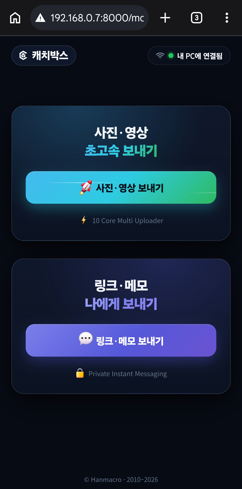
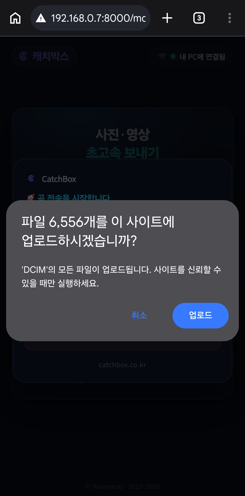
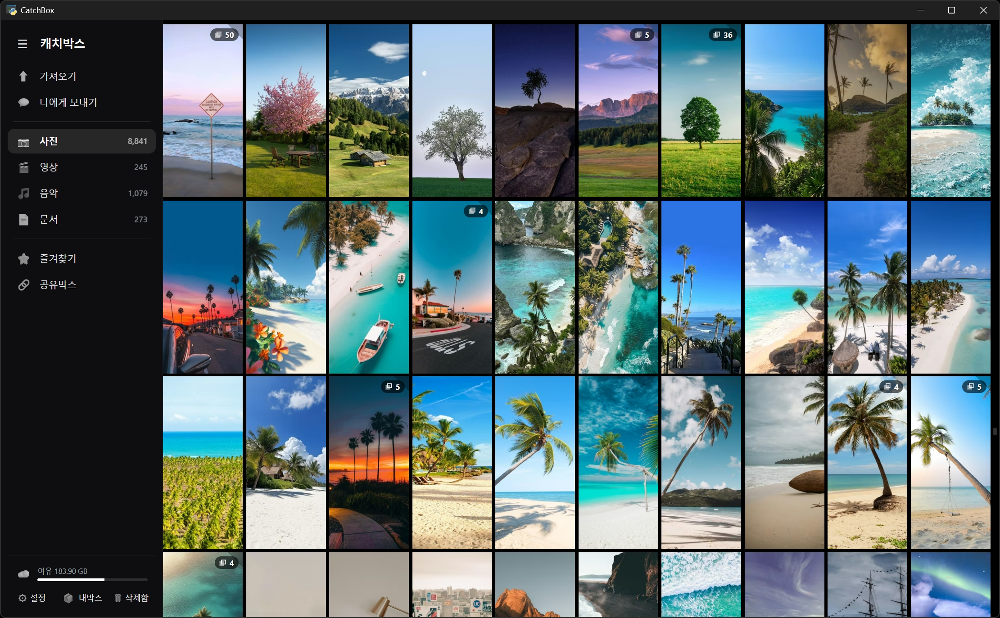

용량 압박, 이제 그만
폰 용량 때문에
폰 용량 때문에
돈 쓰지 마세요
1분이면 해결돼요
캐치박스가 1초당 100장씩 컴퓨터로 옮겨 드릴께요.
비싼 폰으로 바꾸거나 매달 클라우드 요금 낼 필요 없어요. 폰 사진을 내 PC로 딸각 한번으로 옮기세요.
Windows 무료 다운로드PC프로그램만 설치하면 끝. 앱설치·로그인 없음
다운로드는 Windows PC에서 설치하세요. 폰으로 보고 있다면 이 주소를 PC에서 열어주세요.
사용 방법
앱설치 없이, 로그인 없이
갤럭시 · 아이폰 · 태블릿 모두 OK

STEP 1
폰에서 QR 스캔
PC 캐치박스 가져오기 화면에 뜬 QR을 폰 카메라로 찍으면, 폰에 사진·영상 보내기 화면이 바로 열립니다. 앱 설치도, 회원가입도 없습니다.

STEP 2
사진 폴더를 통째로 선택
한 장씩 고를 필요 없어요. 사진 폴더를 통째로 고르면 수천 장도 한 번에. ‘업로드’만 누르면 준비가 끝납니다.

STEP 3
사진이 도착하면 자동 앨범생성
보내기만 하면 중복은 제외하고 새로운 사진만 차곡차곡. 원본화질 그대로 큰화면에서 즐기세요.
USB 50분 → 캐치박스 5분
캐치박스만의 10배 빠른 무선전송! 지금 바로 경험해보세요
USB 케이블
50분
선 꽂고 50분 대기
Quick Share
15분
무선 고속
캐치박스
5분
초고속 무선
캐치박스 멀티전송은 초당 100장 사진을 전송 합니다.
자주 묻는 질문
아이폰도 되나요?
네, 아이폰으로 촬영한 HEIC 사진, HEVC 영상도 캐치박스에서 바로 열립니다.
갤럭시도 되나요?
네, 고품질 HEVC로 촬영한 영상도 캐치박스에서 바로 열립니다.
공유기만 있으면 되나요?
네, 같은 Wi-Fi 연결된 모든 기기끼리 양방향 파일을 옮길 수 있습니다. 2G보다 5배 빠른 5G 접속 권장드립니다.
다시 폰으로 보낼 수 도 있나요?
네, 캐치박스 "나에게 보내기" 메뉴를 클릭하시면 컴퓨터 파일을 폰에서 열어볼 수 있습니다.
데이터가 부족한데 되나요?
네, 같은 Wi-Fi로 기기끼리 직접 주고받아 데이터(LTE)를 전혀 쓰지 않습니다.